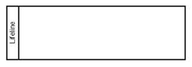
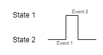
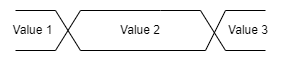
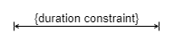
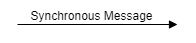
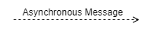
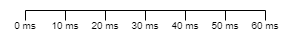

Timing Diagram
A timing diagram is a specific type of interaction diagram, where the focus is on timing constraints. It is used to explore the behaviors of objects throughout a given period of time.
Diagram Model
Name |
Graphical Representation |
Description |
|---|---|---|
Lifeline |
 | The lifeline represents an individual participant in the interaction. It is aligned horizontally and read from left to right. |
States |
 | States are represented by a state lifeline, which shows the change of state of an item over time. Optionally, the reasons/events for a state change can be specified. |
Values |
 | Values are represented by a value lifeline. In contrast to the state lifeline, many different values can be modelled. |
Duration Constraint |
 | Constraints for a duration can be very useful. Ranges can be specified with .., e.g. {n..m}. |
Synchronous Message |
 | If states and values from different participants have a direct dependency, the transitions can be modelled with synchronous messages. |
Asynchronous Message |
 | If a reaction is not immediate, e.g. if a response is sent by another task or process, use the asynchronous message arrows. |
Timing Ruler |
 | The timing ruler is optional, but recommended. The appearance of the ruler can be adapted to the diagram, it may have gaps or variables like t and t+1. |
{kind=link}
{kind=link}
{kind=link}
{kind=link}
{kind=link}
{kind=link}
{kind=link}
{kind=link}